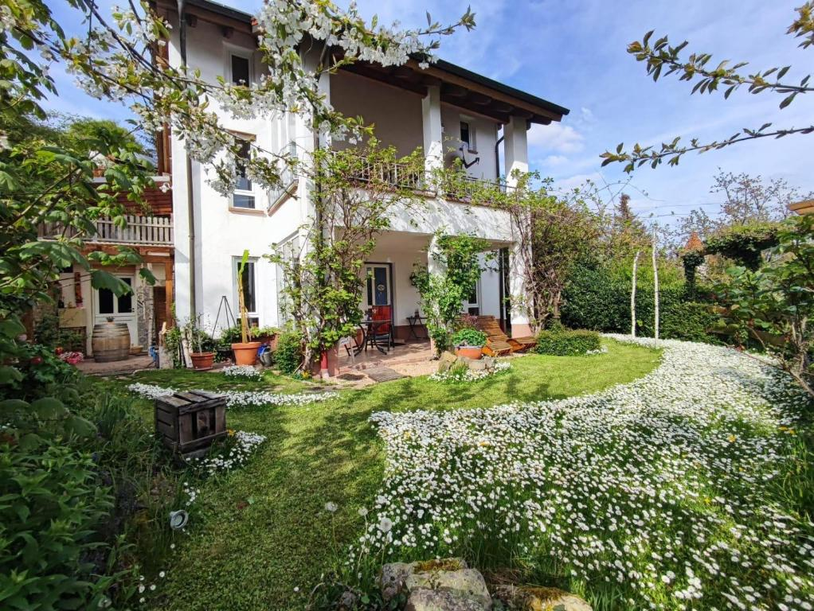

Die Ferienwohnung

Die Wohnung liegt in ruhiger Südhanglage, am Ortsrand von Leinsweiler.
Erholen Sie sich über den Dächern von Leinsweiler, in einer idyllisch gelegenen Ferienwohnung (ca. 50 qm²) mit Sonnenwiese/Garten (Südhang) und gemütlicher Wind- und Wetter geschützter Terrasse
Fußweg zum Ortskern und Bäcker nur ca. 3 Minuten
Mit eigenem Internetanschluss und Telefon
Neu: Eine gemütliche Sauna mit Ruheraum und Außenbereich im Garten kann optional dazu gebucht werden.
Preise
Für zwei Personen bei sieben Übernachtungen - 75 €/Nacht
Weniger als sieben Übernachtungen - 90 €/Nacht
Für eine dritte bzw vierte Person Schlafsofa optional zubuchbar - 20 €/Nacht und Person
Kinder bis zehn Jahre - 10 €/Nacht
Haustiere - auf Anfrage, 5 €/Nacht
Inklusive sind alle Nebenkosten, Bettwäsche, Handtücher und Parkplatz
Frühstück
Auf Anfrage besteht eine Frühstücksmöglichkeit bei Lauras Weinherberge in Leinsweiler - gegen Aufpreis
Sauna
Die neue Sauna mit Ruheraum und Liegebank im Garten, Außendusche und Getränkekühlschrank ist optional zubuchbar
Vier Stunden für zwei Personen - 20 €
Vergünstigungen
Verlängerungswoche - 70 €/Nacht
Langzeitmiete ab 4 Wochen - auf Anfrage